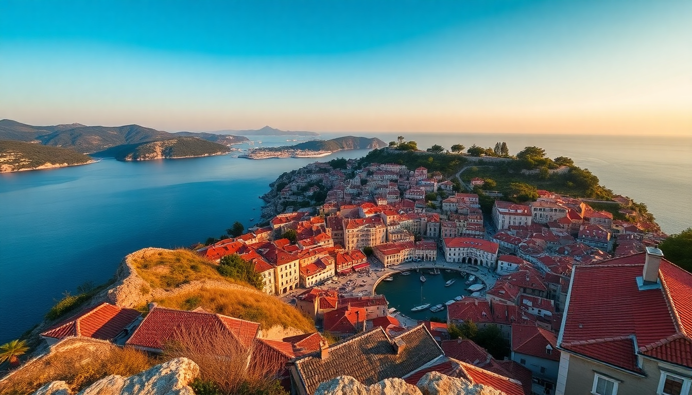

Best Time to Visit Croatia: Month-by-Month Guide for 2025

I’ve been to Croatia three times in the last five years—once in June, once in September, and once in the dead of January. Each trip felt like a different country. The crowds, the prices, the light, even the way locals treated me changed completely. Here’s what I learned, month by month, for 2025.
What’s the weather really like in January and February?
Cold, grey, and quiet—especially inland. In Zagreb, I walked empty streets near Ban Jelačić Square with a wool coat and scarf, and the Dolac Market had only a handful of vendors selling dried figs and mulled wine. The coast is milder but still chilly. Dubrovnik’s Old Town felt like a ghost town, which I actually loved for photos, but many restaurants along Stradun were closed or running reduced hours. Hvar town was nearly shuttered; the ferry schedule thins out, and the Fortica Fortress viewpoint was wind-whipped and deserted.
- Zagreb gets snow maybe twice a year, but drizzle is more common.
- Dubrovnik averages 10°C (50°F) in January—pack layers.
- Split’s Riva promenade is pleasant on a sunny day but dead after dark.
- Ferry lines to Hvar and Korčula run limited winter schedules; check Jadrolinija before planning.
If you want solitude and low prices, this is your window. But I wouldn’t come for beach vibes.
When do things start warming up (March to May)?
March is still off-season, but April and May are my favorite months for the coast. In Split, I sat outside at Kantun Paulina for a ćevapi lunch in late April without a jacket. The Diocletian’s Palace was busy but not suffocating. By May, Dubrovnik starts filling up, but you can still walk the City Walls without elbowing tourists. Zagreb in early spring is lovely—Maksimir Park blooms, and the Museum of Broken Relationships had no line at all.
- March: Still chilly on the coast; Plitvice Lakes are muddy but uncrowded.
- April: Hvar begins to stir; Carpe Diem beach club stays closed, but local konobas open.
- May: Ideal for Dubrovnik’s Lokrum Island day trip—ferries run, but crowds haven’t peaked.
- Easter week can spike prices in Split and Dubrovnik; book early.
I’d pick mid-May for a coast trip. You get good sun, open restaurants, and tolerable crowds.
Is June as packed as everyone says?
Yes—but it’s manageable if you plan around cruise ships. In Dubrovnik, I learned to check the Port Authority schedule online: days with four or more ships docked turned the Old Town into a human river. Split’s Riva was buzzing every evening, and the Marjan Hill hike offered a quiet escape. Hvar in June is lively but not yet insane—the Spanish Fortress had a wait but not a queue. Zagreb stays calm; it’s not a beach destination, so June feels like a normal city.
- Dubrovnik: Avoid 10 AM–3 PM near Pile Gate on cruise days.
- Split: Bačvice Beach gets packed by noon; go early.
- Hvar: Book ferries ahead via Jadrolinija or Krilo; walk-on tickets sell out.
- Zagreb: Upper Town (Gornji Grad) is quiet—perfect for a relaxed coffee at Kavana Lav.
June is good for a first-timer, but I’d skip the last week (crowds spike). Prices are high but not peak-July high.
What about July and August—should I just skip them?
Honestly, if you can avoid July and August, do. I made the mistake of visiting Dubrovnik in mid-July once, and the heat was oppressive—35°C at noon along Stradun. The City Walls felt like a griddle. Split’s Diocletian’s Palace was a slow-moving crowd from 10 AM to 10 PM. Hvar was the worst: the ferry port was chaos, and Pokonji Dol Beach had towels touching towels. Zagreb was more bearable, but even the Zrinjevac Park fountains were surrounded by sweaty families.
- Dubrovnik: Banje Beach is overpriced and packed; take a water taxi to Sveti Jakov Beach instead.
- Split: Kašuni Beach (rocky, locals-only) beats Bačvice.
- Hvar: Rent a scooter to reach Dubovica Beach—less crowded than town beaches.
- Zagreb: Jarun Lake is the local summer escape; cheap entry, decent swimming.
If you must go in peak season, book everything—hotels, ferries, restaurant reservations—months ahead. And bring a refillable water bottle; tap water is safe everywhere.
Is September the secret sweet spot?
Yes. September is my favorite month in Croatia. The sea is still warm (23–25°C), crowds thin out after the first week, and prices drop. In Split, I had Villa Spiza (no reservations, small plates) to myself at 1 PM. Dubrovnik felt livable again—I walked the Walls at 5 PM with maybe 20 other people. Hvar was mellow; the Pakleni Islands water taxi ran less frequently, but the beaches were half-empty. Zagreb started cooling down, perfect for exploring Tkalčićeva Street cafés.
- Early September: Still busy; avoid the first week if possible.
- Late September: Ideal for Dubrovnik day trips to Elaphite Islands.
- Split’s Green Market (Pazar) is less chaotic—great for fresh figs and cheese.
- Hvar’s Stari Grad Plain (UNESCO) is quiet for cycling.
I’d book a late-September trip without hesitation. You get summer weather without the summer nonsense.
What’s it like in October and November?
October is a gamble—some years you get a golden autumn, others you get rain. Zagreb shines in October: the Advent season hasn’t started, but the Gornji Grad streets are leafy and quiet. Dubrovnik in November is cheap but grey; I stayed at a hotel near Lapad Bay for half the July rate. Split’s Marjan Forest was beautiful with fall colors, but the Riva was sparsely populated. Hvar essentially shuts down after mid-October—most hotels and restaurants close until Easter. Don’t go to Hvar in November.
- October: Good for Plitvice Lakes with autumn foliage—fewer crowds.
- November: Zagreb starts its Advent markets late November; it’s not a major draw yet.
- Dubrovnik: Many tour boats stop running; check schedules.
- Split: Diocletian’s Cellars are still open, but the guided tours feel rushed.
I’d choose Zagreb for a cultural trip in October/November. The coast is too sleepy.
How does December compare?
December is all about Zagreb’s Advent market, which won “Best Christmas Market” in Europe multiple times. I spent a weekend there in 2023: King Tomislav Square had ice skating, mulled wine stands, and a huge tree. The Upper Town felt magical with lights and live music. Dubrovnik also does a nice Christmas market on Stradun, but it’s smaller and colder. Split and Hvar are quiet—most visitors are locals doing holiday shopping.
- Zagreb: Advent runs from late November to early January; weekends are packed.
- Dubrovnik: Festival of St. Blaise (early February) is better for local culture.
- Split: Riva has a small market, but it’s not worth a trip.
- Hvar: Ferry service reduces; I wouldn’t bother.
December is great for Zagreb only. For the coast, wait for spring.
FAQ
Is Croatia too crowded in August? Yes, especially Dubrovnik, Split, and Hvar. Cruise ships dump thousands of day-trippers into the Old Towns, and beaches are sardine-packed. If you have flexibility, shift to late September or early May.
What’s the cheapest month to visit Croatia? January and February are the cheapest for flights and hotels, but many coastal restaurants and attractions close. November is a close second—still cheap, but more places in Dubrovnik and Split stay open.
Can I swim in the sea in October? It’s possible but not comfortable. Sea temperatures drop to about 18–20°C (64–68°F) in October. I’ve done it on a warm day, but you won’t want to stay in long. Stick to May through September for swimming.
Conclusion
- Best overall: Late September—warm sea, thin crowds, lower prices.
- Best for budget: January or November (but skip Hvar).
- Best for festivals: December in Zagreb for Advent.
- Worst for crowds: July and August in Dubrovnik and Hvar.
- Best for hiking/exploring: April or October, when Plitvice Lakes and Marjan Hill are quiet.